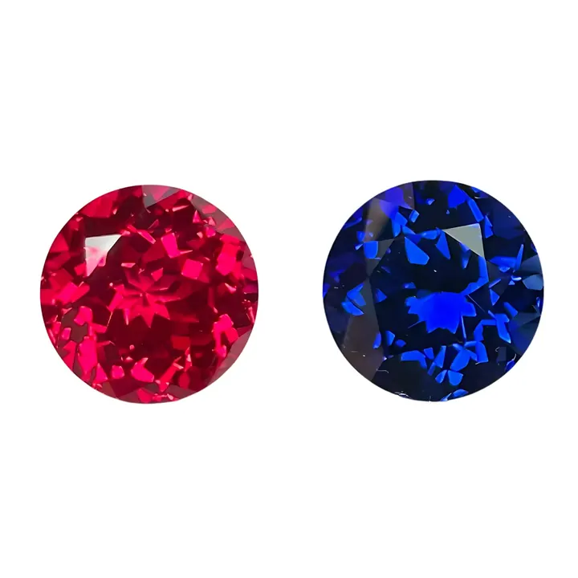

皇家藍與矢車菊藍：藍寶石的兩種頂級人格
皇家藍是王者的深邃，矢車菊藍是少女的絨光——同一顆藍寶石，兩種藍，兩種身價邏輯。

核心定義
皇家藍（royal blue）與矢車菊藍（cornflower blue）是藍寶石市場最響亮的兩個色標。皇家藍指飽和度高、色調中深的濃藍——像午夜與皇冠的藍，沉穩霸氣；矢車菊藍則指帶絲絨感、色調略淺的柔和藍——像矢車菊花瓣，溫柔靈動。兩者都是頂級，但「性格」相反。
科學上，藍寶石的藍色來自鐵（Fe）與鈦（Ti）的電荷轉移：鐵鈦離子對吸收紅橙段光，穿透藍段。鐵鈦比例與含量不同，藍的深淺、明暗就不同——皇家藍需要「足夠多且配比恰當」的鐵鈦，矢車菊藍則多了一份由內含物散射帶來的「絨感」。
特徵與分類
| 色標 | 色調 | 視覺個性 | 典型產地 |
|---|---|---|---|
| 皇家藍 royal blue | 中深、高飽和 | 深邃大氣、權威感 | 緬甸、斯里蘭卡、馬達加斯加 |
| 矢車菊藍 cornflower | 中、柔和 | 絨感靈動、溫柔 | 喀什米爾（傳奇）、斯里蘭卡 |
| 濃藍 vivid blue | 中、飽和 | 明亮鮮豔 | 各地 |
市場常把兩者簡單分為「深與淺」，其實關鍵差異在「飽和度×色調×內含物質感」：皇家藍是濃豔的深，矢車菊藍是清澈的柔。喀什米爾矢車菊藍因帶特有的「絲絨」（silk）內含物散射，藍中泛著天鵝絨光澤，成為傳說中的頂級。
科學原理
藍色的物理是電荷轉移（charge transfer）：鐵（Fe²⁺/Fe³⁺）與鈦（Ti⁴⁺）的離子對在吸收特定波長光時電子跳躍，讓剛玉呈現藍色。鐵鈦含量越高，藍越深；鈦太多則發暗、鐵太多則發灰綠——調色是地質的化學平衡遊戲。
「絲絨感」的來源是細小針狀內含物（如金紅石針或矽鈦礦針）散射光線，讓顏色「化開」得像絲絨——喀什米爾藍寶因此被形容為「會呼吸的藍」。同樣的針狀物，在星光藍寶石身上則織出六道光芒。
鑑定與鑑別方法
- 在自然光與標準光源下看色調：皇家藍深沉、矢車菊藍柔和
- 用分光鏡/光譜確認鐵鈦致色，排除染色
- 顯微鏡找「絲絨」針狀內含物（喀什米爾特徵）
- 證書對照顏色評語：GIA 有 royal blue 描述，cornflower 多用於貿易
- 檢查處理：擴散處理的藍色只在表面一層皮
市場行情與保養建議
行情上，皇家藍與矢車菊藍都是藍寶石的高端色標；喀什米爾產地絕版多年，價格神話級；緬甸皇家藍與斯里蘭卡矢車菊藍是當代市場的主流高端。顏色評語是否出自權威實驗室，直接影響定價。
選色建議：皇家藍氣場強，適合正式與投資；矢車菊藍日常更柔和百搭。兩者無絕對高下——但「認證＋無燒」永遠是身價的雙保險。
常見誤區
價格取決於具體品質與產地，而非色標本身。喀什米爾矢車菊藍是天價，低品質皇家藍也可能平價——色標只是起點，品質才是終點。
過深的藍會發暗、發黑，反而跌出皇家藍的「豔」字。皇家藍的關鍵是「深而有光」——又深又亮，才是它的本質。
冷知識
印度喀什米爾的藍寶礦在 19 世紀末發現、20 世紀初就枯竭，如今只剩庫存流通。絕版傳說＋絲絨質感，讓它成為藍寶石界的傳奇。
少數藍寶石含釩（V），在日光下偏藍、燈光下偏紫——這是「變色藍寶石」的科學，也是藍寶石家族裡最浪漫的意外。
反直覺觀點
讓它溫柔的那層絨光，來自細小針狀內含物的散射——換在淨度分級裡，這些「內含物」會是扣分項，但在顏色美學裡，它們是加冕的功臣。同一個特徵，兩種評價體系。
藍寶石的藍對光源敏感：日光下鮮豔、鎢絲燈（偏黃）下變暗。試戴藍寶石，一定要在你要長期佩戴的光源下看——珠寶店射燈下的美，不等於家裡的日常。